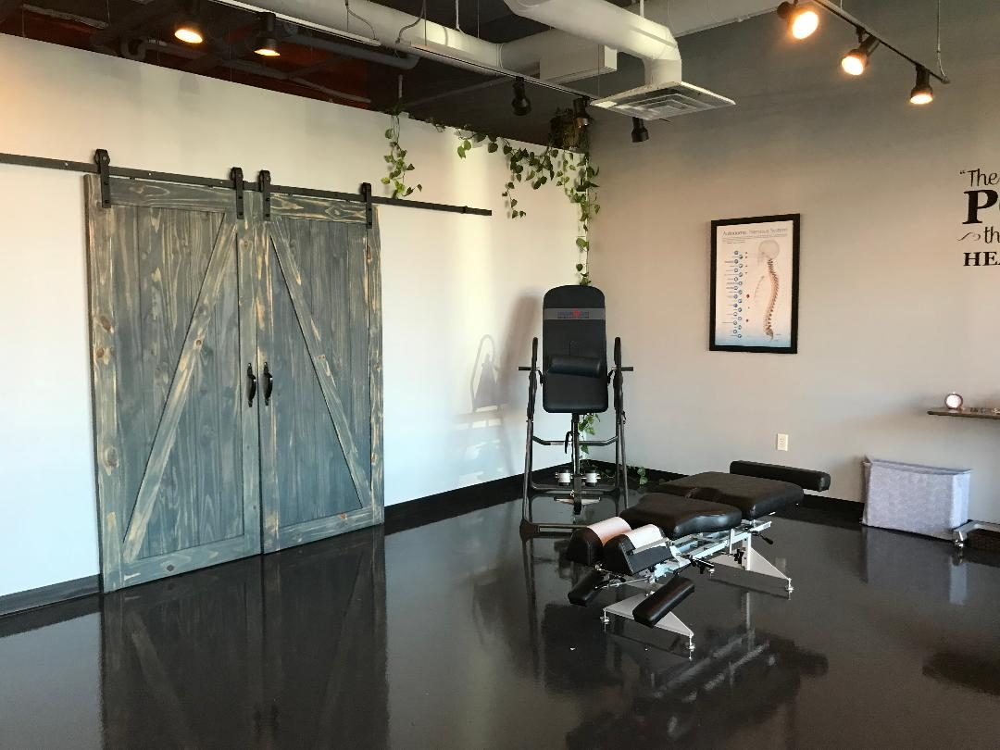
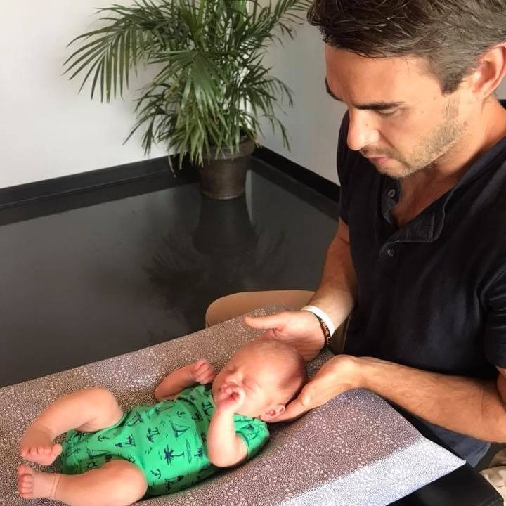
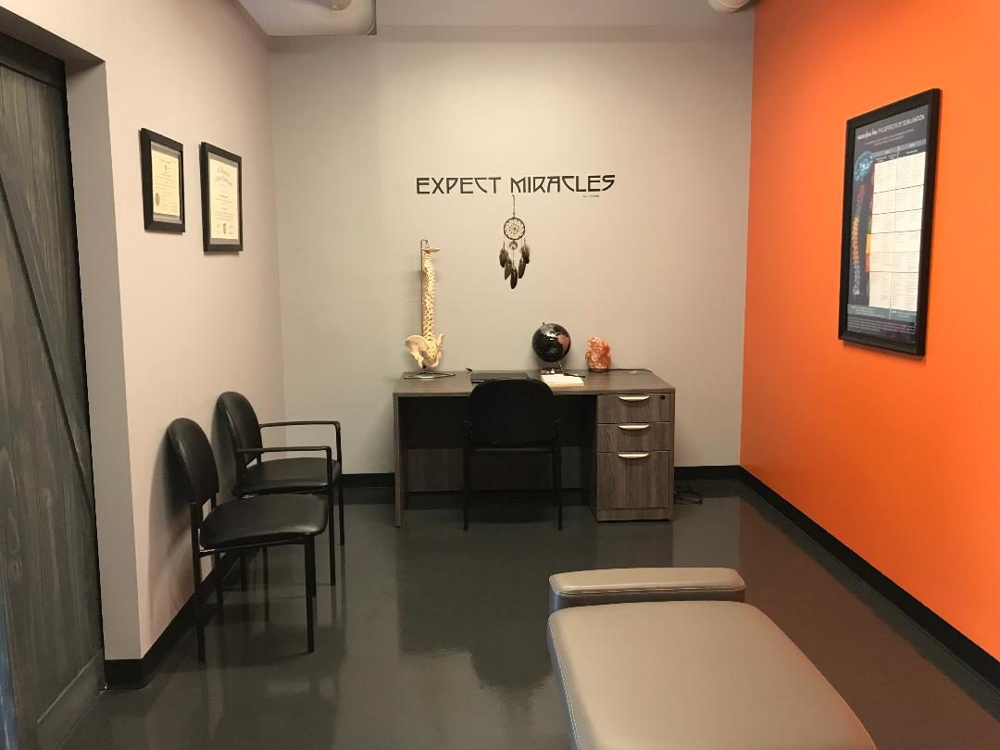

Services at Ignite Chiropractic
Four areas of care
Four areas of care, all from the Chattanooga practice. Call to ask about any of them, or about a free 15 minute consultation with Dr. Jeff.
Pain Relief
Pain relief care at Ignite looks for the underlying cause of discomfort instead of covering the symptom with a pill. The practice holds that pain is a warning sign from the body's innate intelligence that something needs to change, and its job is to address the cause of the problem.
Reasons people visit include:
- Back and shoulder pain
- Neck pain and whiplash
- Migraines and headaches
- Tingling and numbness
- Fatigue
- Fibromyalgia
- Asthma and allergies
- Mood and stress

Prenatal Care
Care for mothers whose bodies are changing through pregnancy. As a woman's belly grows, her center of gravity changes, and most of the stress goes to the lower back. Chiropractic adjustment keeps the spine and pelvis aligned to give the back the support it needs during this period of growth.
Dr. Jeff uses the Webster technique, developed by the International Pediatric Chiropractic Association. The technique reduces nervous system interference and balances the muscles and ligaments of the pelvis, which gives the baby more room to move into the best position for birth.
Lower back, sciatic, and round ligament pain are common reasons mothers visit during pregnancy.
Pediatric Care
Gentle adjustments for babies and children. Dr. Jeff is specifically trained to work with pediatric patients. A pediatric adjustment is not the same as an adult adjustment: it is very gentle and relaxing for a baby, and it is not uncommon for a baby to fall asleep during one. As children grow, the type of adjustment changes with them.
The practice checks babies and children because the birthing process can be stressful to a newborn's spine and nervous system, and because children slip, fall, and tumble as they develop. The waiting room has a play area for kids.

Wellness Care
Wellness care is for people who are not in pain. Once people experience chiropractic care, many make it part of their normal health routine. The work focuses on the nervous system, which the practice describes as the master control system of the body, and on how the body adapts to the daily stressors of life.
The practice also runs workshops and classes for the people it serves, on balancing body, mind, and soul.

Not sure where to start?
The practice offers a free 15 minute consultation with Dr. Jeff, to find out if chiropractic care is right for you. If your insurance covers chiropractic care, the practice provides a superbill with the proper documentation that you can submit for reimbursement.